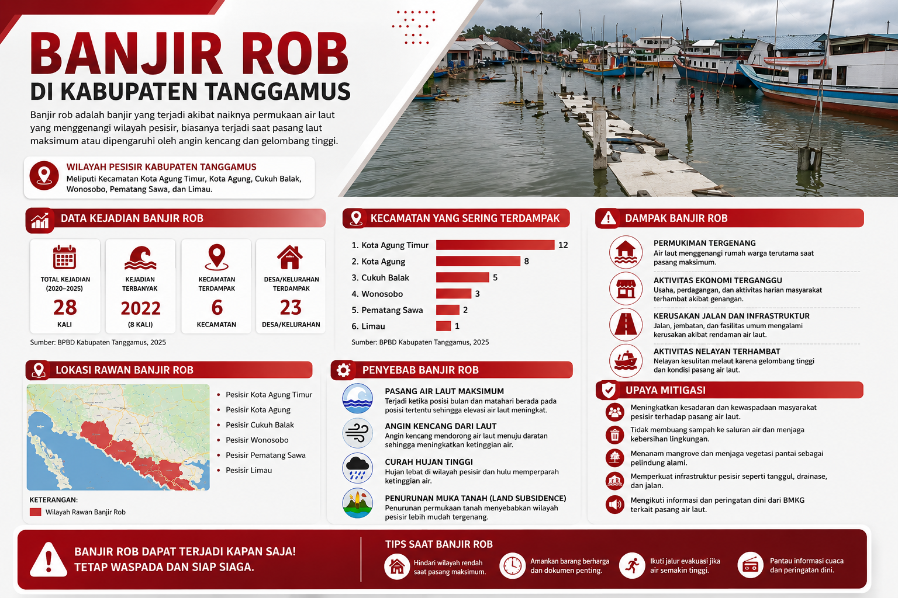

FAKULTAS KEGURUAN DAN ILMU PENDIDIKAN
PENDIDIKAN GEOGRAFI
Home
Profil
Informasi
Home
›
Banjir Rob
🌊 BANJIR ROB
Informasi sebaran dan mitigasi bencana banjir rob di Kabupaten Tanggamus
INFOGRAFIS BANJIR ROB

← Kembali ke Beranda